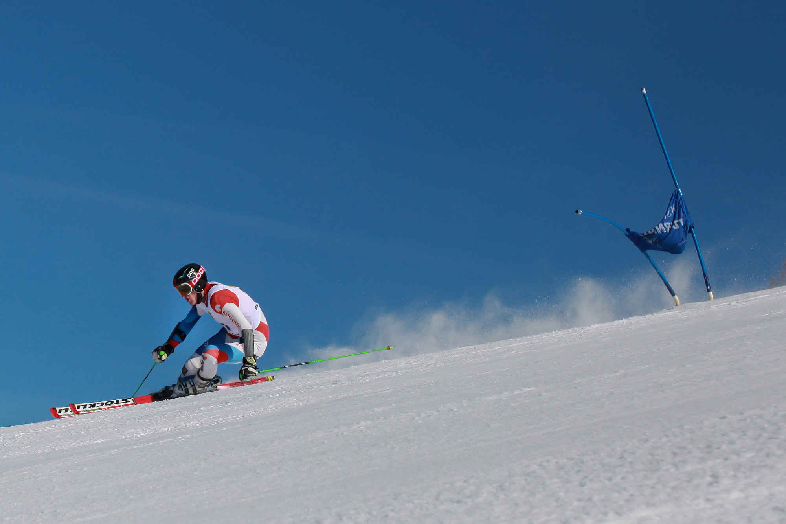
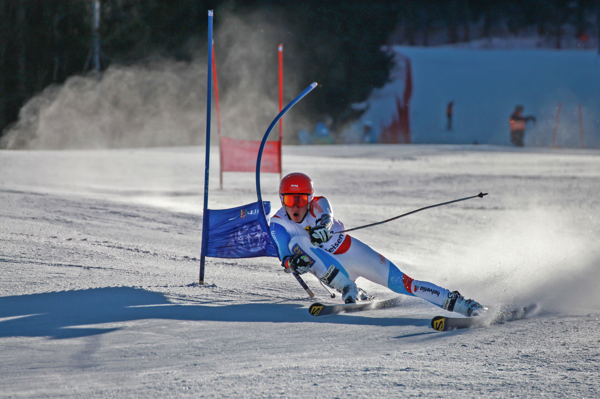

Home / Renntermine
WSV – Turnau
Wettkämpfe und Training auf der homologierten FIS-Rennstrecke der Schwabenbergarena.
Wettkampfarena
Die Schwabenbergarena verfügt über eine homologierte FIS-Riesentorlauf- und Torlaufstrecke – ideale Bedingungen für Training und Wettkämpfe. Ob Riesenslalom, Slalom oder Trainigsläufe: Hier sind die Voraussetzungen für sportliche Höchstleistungen gegeben.
Aktuelle Informationen und Termine finden Sie auf der Website des WSV Turnau (Wintersportverein).

Eindrücke


Gut zu wissen
Bei Rennen und Training kann es zu Pistensperren oder geänderten Betriebszeiten kommen. Bitte informieren Sie sich vorab beim WSV Turnau oder unter +43 3863 2888.